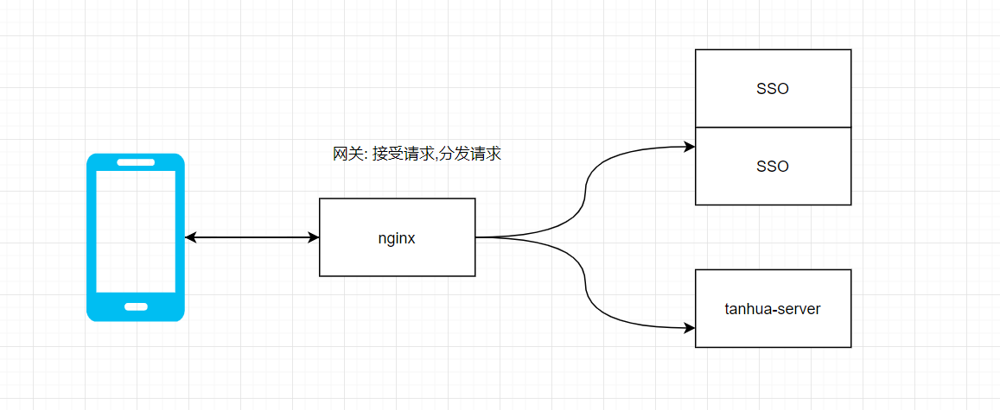
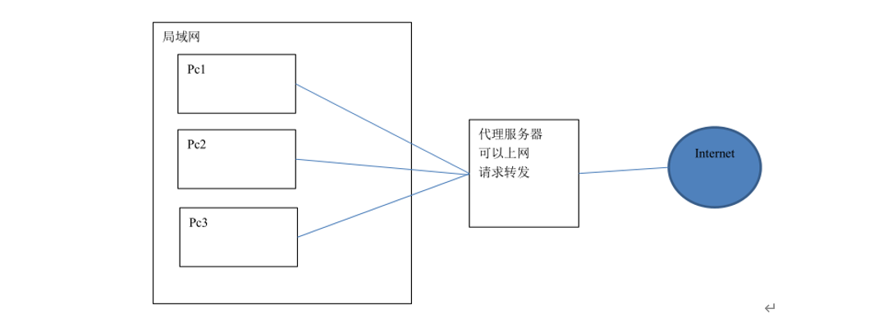
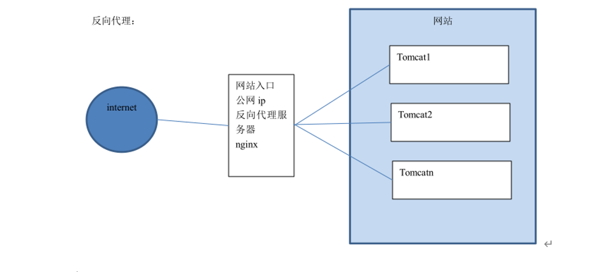
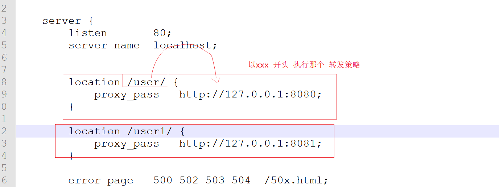

Nginx反向代理与负载均衡¶
1 反向代理¶

1.1 什么是反向代理¶
反向代理（Reverse Proxy）方式是指以代理服务器来接受internet上的连接请求，然后将请求转发给内部网络上的服务器，并将从服务器上得到的结果返回给internet上请求连接的客户端，此时代理服务器对外就表现为一个反向代理服务器。
首先我们先理解正向代理(例如VPN )，如下图：

正向代理是针对你的客户端，而反向代理是针对服务器的，如下图

1.2 配置反向代理-准备工作¶
（1） 启动spring-boot 项目 端口号8080
（2） 访问 localhost:8080 /hello 可以看到消息
4.1.3 配置反向代理¶
（1）在Nginx主机修改 Nginx配置文件
http {
include mime.types;
default_type application/octet-stream;
sendfile on;
keepalive_timeout 65;
server {
listen 80;
server_name localhost;
error_page 500 502 503 504 /50x.html;
location = /50x.html {
root html;
}
location / {
proxy_pass http://127.0.0.1:8080;
}
}
}
（2）重新启动Nginx 然后用浏览器测试：localhost

2 负载均衡¶
2.1 什么是负载均衡¶
负载均衡 建立在现有网络结构之上，它提供了一种廉价有效透明的方法扩展网络设备和服务器的带宽、增加吞吐量、加强网络数据处理能力、提高网络的灵活性和可用性。
负载均衡，英文名称为Load Balance，其意思就是分摊到多个操作单元上进行执行，例如Web服务器、FTP服务器、企业关键应用服务器和其它关键任务服务器等，从而共同完成工作任务。
2.2 配置负载均衡-准备工作¶
（1）将刚才的工程的 修改端口号 8081 .8082 分别 启动(同时启动3个应用)
（1）为了能够区分是访问哪个服务器的网站，可以在返回数据上加上端口号区分
4.2.3 配置负载均衡¶
修改 Nginx配置文件：
```properties http { include mime.types; default_type application/octet-stream;
sendfile on;
keepalive_timeout 65;
upstream tanhua {
server localhost:8080;
server localhost:8081 ;
server localhost:8082;
}
server {
listen 80;
server_name localhost;
error_page 500 502 503 504 /50x.html;
location = /50x.html {
root html;
}
location / {
proxy_pass http://tanhua;
}
}
} ```
地址栏输入localhost 刷新观察每个网页的标题，看是否不同。
经过测试，三台服务器出现的概率各为33.3333333%，交替显示。
如果其中一台服务器性能比较好，想让其承担更多的压力，可以设置权重。
比如想让NO.1出现次数是其它服务器的2倍，则修改配置如下：
````properties
http { include mime.types; default_type application/octet-stream;
sendfile on;
keepalive_timeout 65;
upstream tanhua {
server localhost:8080;
server localhost:8081 weight=2;
server localhost:8082;
}
server {
listen 80;
server_name localhost;
error_page 500 502 503 504 /50x.html;
location = /50x.html {
root html;
}
location / {
proxy_pass http://tanhua;
}
}
} ````